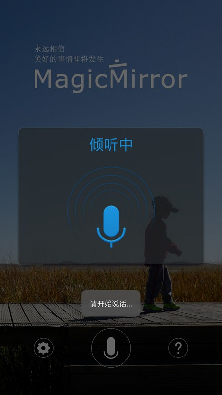

本文介绍魔镜制作的软件部分。
系统
系统安装
首先需要在树莓派官网（http://www.raspberrypi.org/downloads）下载系统镜像，然后将 TF 卡连接到个人电脑上，使用官方的 NOOBS 工具或者其他 U盘镜像烧录工具（例如 Win32 Disk Imager，网上有很多教程，此处不赘述）将系统镜像烧录到 TF 卡中。烧录成功的标志是将 TF 卡装到树莓派上之后打开电源，树莓派能够正常启动系统（俗称“一次点亮”）。
系统配置
安装好操作系统后，根据需要配置以下内容：
-
SSH远程访问（系统默认开启）
-
无线网络（使用即插即用的 USB 无线网卡则无需配置）
-
更换软件源
-
扩展可用空间（
raspi-config命令） -
配置默认启动图形桌面（系统默认启动图形桌面）
-
配置系统时间
-
设置静态IP（未来的魔镜服务器地址）
-
配置防火墙（开放 Web 服务器需要的端口，或者直接关闭防火墙）
-
设置屏幕纵向显示（在
/boot/config.txt文件中添加display_rotate=1） -
设置 HDMI 热插拔（在
/boot/config.txt文件中取消hdmi_force_hotplug=1的注释）
具体的配置方法可在网络上或在本文末尾列出的参考资料中查询到，这里就不重复了。
软件安装
浏览器
考虑到浏览器的显示效果及兼容性，推荐安装 Chromium：
sudo apt-get install chromium x11-xserver-utils unclutter
最好还在 /etc/xdg/lxsession/LXDE-pi/autostart 配置以下内容以禁用屏幕保护，设置浏览器开机自启动等：
# 注释此句禁用屏幕保护
# @xscreensaver -no-splash
# 添加以下内容配置自启动
@xset s off
@xset -dpms
@xset s noblank
@chromium --kiosk --incognito <Web 服务器访问地址>
Web 服务器
如果选择 MagicMirror 原作者的项目代码，应该安装 PHP + Apache（参阅参考资料【1】）；如果选择本人的项目代码，应该安装 JDK + Tomcat。
-
JDK 安装：http://blog.csdn.net/manerfan/article/details/46391857
-
Tomcat 安装：不推荐直接使用
sudo apt-get install tomcat7命令安装 Tomcat，可能安装的 Tomcat 版本与本项目要求不符，推荐到 Tomcat 官网下载 Tomcat 7 以上最新版本（tar.gz 版）并解压缩到用户目录下。
Server
环境完全搭建完成之后就是 Coding 时间了。如果只是简单地使用原有的功能就太没意思了，现在的人工智能、语音识别这些技术已经很成熟了，适当地应用一下也是件很有意思地事。考虑到自己的技能树，干脆直接使用 Java 重构了整个应用（项目源码：https://github.com/weyo/MagicMirror）。
功能
重构的魔镜服务器主要做了这么几件小事：
- 空气质量 看看最近的新闻就知道这个功能是多么的必要……
- 智能机器人 只能冷冰冰显示东西的镜子当然很无趣，能够愉快聊天的镜子才是好镜子~~
- 语音识别 和智能机器人配套的语音输入服务。
配置
在 config.js 中根据个人需要修改以下配置信息：
- 时间格式
- 所在城市
- APPID（在 OpenWeatherMap 网站上注册用户获取免费的 APPID）
- AppKey（在 PM25.in 网站上申请的 AppKey）
- Key（在 图灵机器人 网站上申请的 Key）
- 欢迎词
- 最大日程数量及个人日程表链接（iPhone 可以在 iCloud 中将某个日历设为公开日历得到）
- 新闻 RSS （可自行搜索可用的新闻 RSS，国内用户推荐使用新浪的 RSS）
- 需要启动的功能服务
- ...
趁着阿里云近期有优惠活动，专门搭建了一个 Demo 服务器：http://60.205.205.171:8080/server/，有效期半年（至 2017年6月），在有效期内可以在该地址上查看魔镜的应用效果（浏览器最好使用最新版本的 Chrome）。
APP
最后，作为一个 21 世纪的应用，当然少不了 APP~~ :P
由于直接使用树莓派的音频功能需要配置专门的硬件，制作成本和使用体验都不太好，这里就直接使用 APP 来代替外接话筒的功能。

APP 设置选项说明
- 服务器地址：魔镜服务器后台地址（默认为 Demo 服务器地址）；
- 语言：语音输入语言；
- 标点符号：语音识别结果是否带有标点符号；
- 语音输入前端点超时时间：静音时间，即开始录音之后用户多长时间不说话则当做超时处理；
- 语音输入后端点超时时间：后端点静音检测时间，即用户停止说话多长时间内即认为不再输入， 自动停止录音。
在浏览器上打开 Demo 地址 http://60.205.205.171:8080/server/，使用该 APP 输入语音即可看到交互效果。
其他
新功能
目前考虑的新功能有 Slides 照片展示、触摸屏支持等。屏幕空间有限，每个人的需求也不尽相同，怎么利用好有限的空间也是个值得思考的问题。
APP
由于没有 IOS 开发者账号，暂时只开发了 Android 的 APP，后续考虑提供微信语音输入支持（这个功能需要稳定的服务器资源，暂时还只是想法 :-)
Comments
comments powered by Disqus